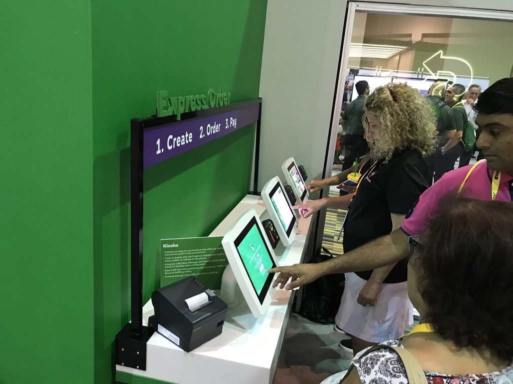
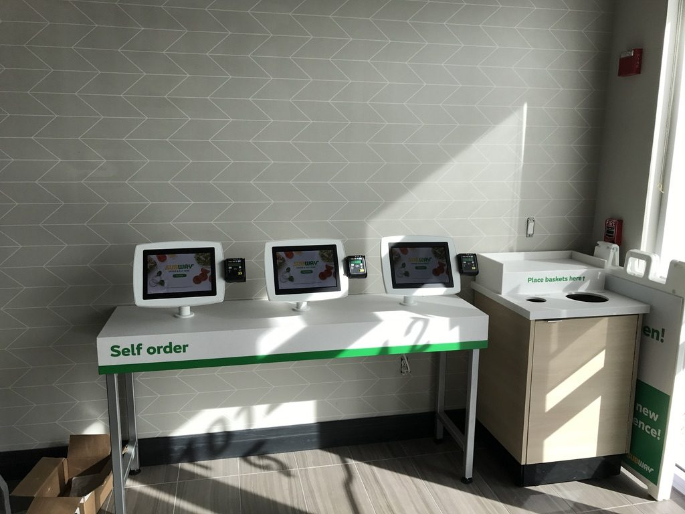
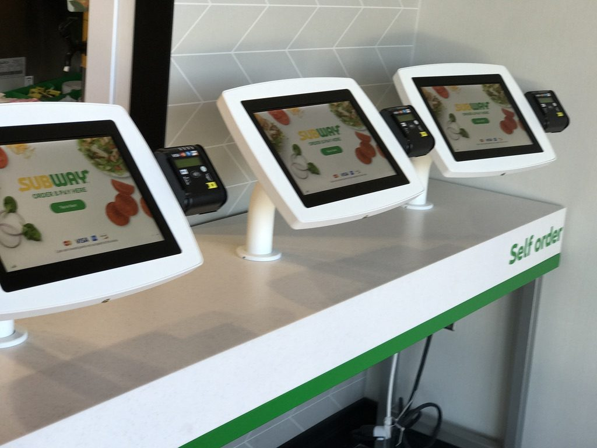

Higher average order value
Customers spent more per transaction through the self-service experience.
Restaurant technology case study
A restaurant technology concept went from executive pitch to working prototype and live-store deployment in four months — delivering higher average orders, lower labor requirements and a 24-week ROI.
Prior project leadership experience at Intellinet, led by Built-N-AI founder Casey Jackson. Subway is a trademark of its owner. Results reflect the described proof-of-concept deployments and varied by location.
Results at a glance
The opportunity
While at Intellinet, Casey Jackson identified an opportunity to help Subway explore self-service ordering technology as part of the restaurant experience. He pitched Subway management directly and landed the contract.
Winning the engagement was only the beginning. Subway needed more than a touchscreen running ordering software. The solution had to work in an actual restaurant environment — taking customers from menu selection and customization through secure payment and delivery of an accurate order to the restaurant.
The schedule was aggressive: four months from project start to the first working prototype.

The solution
Jackson led the project end to end — business development, product design, technology delivery and field deployment — partnering with Agilitee on the software-development component while leading the overall solution and program.
Responsibilities ran from project management, prototype and kiosk design and Agile development cadence through hardware/software integration, device and application security, payment integration, testing, deployment planning, kitting, restaurant installation, launch support and staff training.
When the first proof-of-concept kiosks were ready, Jackson personally installed the first handful in Subway restaurants and spent the initial days onsite launching the system, watching real customers use it, resolving issues and training restaurant staff.
The proof of concept
15–20% higher average order value. Customers ordering through the kiosk generated larger average orders than the traditional ordering process.
Approximately 40 fewer labor hours per week. The self-service model reduced employee time spent on order entry and payment. Those hours could reduce labor expense or be redirected to food preparation and customer service.
24-week ROI. Based on the labor and revenue improvements observed during the proof of concept, the kiosk investment showed an estimated payback of about 24 weeks.
10–15% increase in overall store sales across participating locations, with some individual stores reporting increases as high as 30%. Store performance varied by location, traffic and operating conditions.


Before & after
Employee required to take each customer order
Customer creates and submits the order
Traditional register-dependent checkout
Integrated self-service payment
Labor tied directly to order-taking volume
~40 labor hours per week reduction reported
Traditional average order value
Average order value up 15–20%
Conventional ordering throughput
Additional ordering capacity without another staffed register
Technology concept
Working prototype in four months, then live stores
Business impact
Customers spent more per transaction through the self-service experience.
Stores cut labor tied to traditional ordering and checkout.
Operating and revenue improvements produced a rapid payback.
The aggressive development target was met, then moved into live stores.
Key takeaway
The project succeeded because it started with the business opportunity, designed the technology around the actual operating environment, integrated the necessary systems, tested with real customers, measured the results and built a process capable of scaling. The same person who pitched it was onsite installing the first units and watching customers use them — observe, learn, adjust, test, deploy again.
4 months from start to prototype. 15–20% larger orders. About 40 fewer labor hours per week. 24-week ROI.